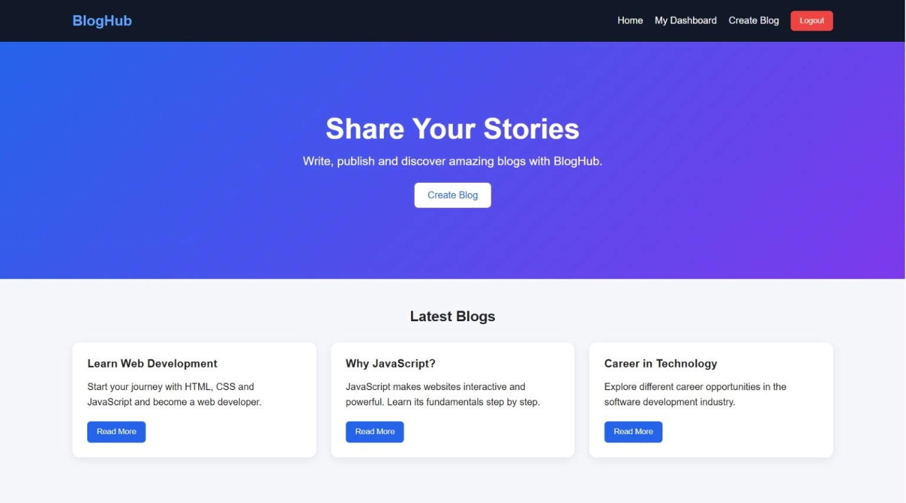
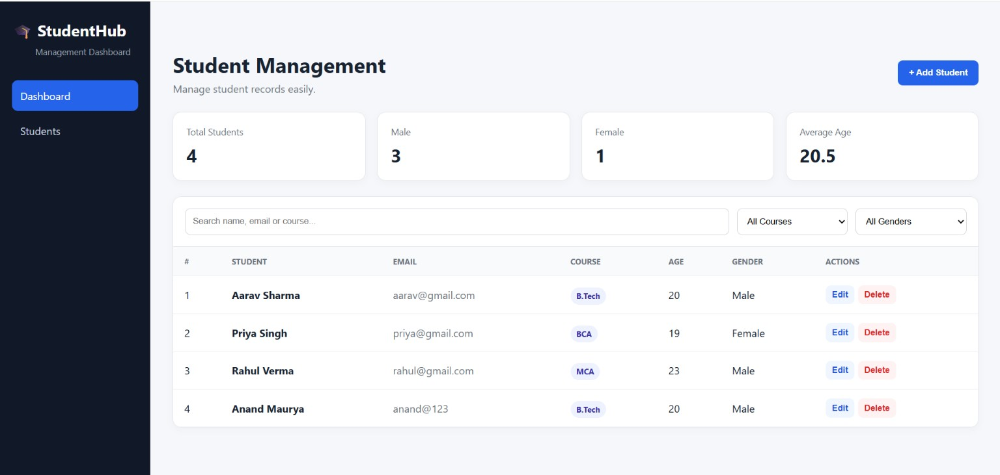
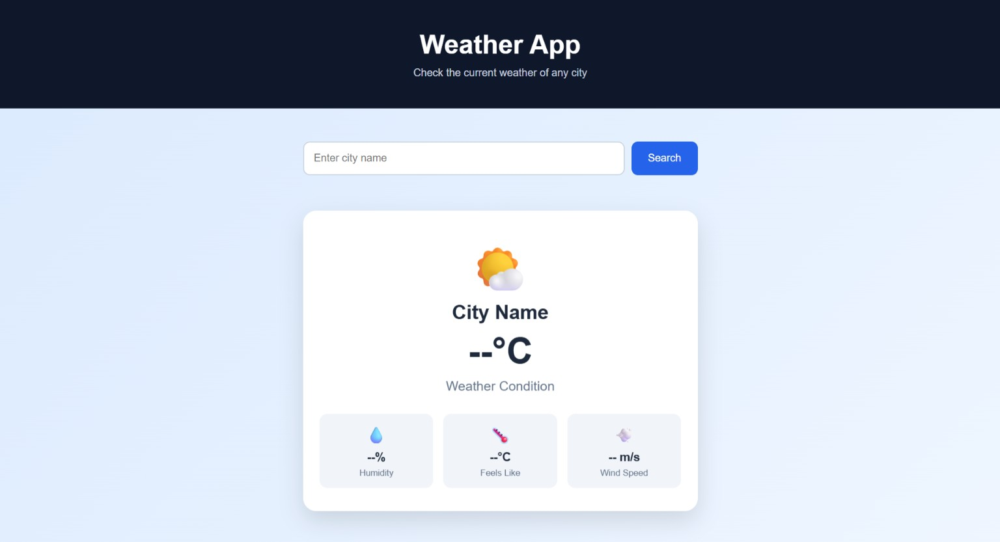

01 · FULL-STACK WEB APP
BlogHub
A full-stack blogging platform for creating, publishing and managing blogs, with authentication and a clean dashboard experience.
JavaScriptNode.jsExpressMongoDBJWT
I'm Anand Maurya, a B.Tech CSE student at NIET who enjoys turning ideas into responsive, practical web applications. Currently focused on frontend and full-stack development.
B.Tech CSE student focused on building practical web applications and learning through real-world development.
01 / WHAT I'VE BUILT

A full-stack blogging platform for creating, publishing and managing blogs, with authentication and a clean dashboard experience.

Student records dashboard with search, filters, statistics and CRUD-style interactions.

Responsive weather application with city search and live weather data through an API.
02 / PROFILE
I'm pursuing B.Tech in Computer Science and Engineering at Noida Institute of Engineering and Technology. I like learning by building projects instead of only studying concepts.
My current interests are frontend development, full-stack web development, Java, DSA and building clean user experiences.
03 / SKILLS
HTML5 · CSS3 · JavaScript · Bootstrap · Responsive UI
Node.js · Express.js · REST APIs · Authentication
MongoDB · CRUD · Data management
Java · OOP · DSA fundamentals · Problem solving
Git · GitHub · VS Code · Browser DevTools
Full-stack development and better software engineering practices
04 / EXPERIENCE
Completed a full-stack web development internship and worked on assigned development tasks and projects.
Completed a six-week online Web Development internship program focused on practical development.
Participated in an internal hackathon and worked with a team to develop a solution.
I'm currently looking for software, web development and full-stack internship opportunities. If you have an opening or want to discuss a project, feel free to reach out.